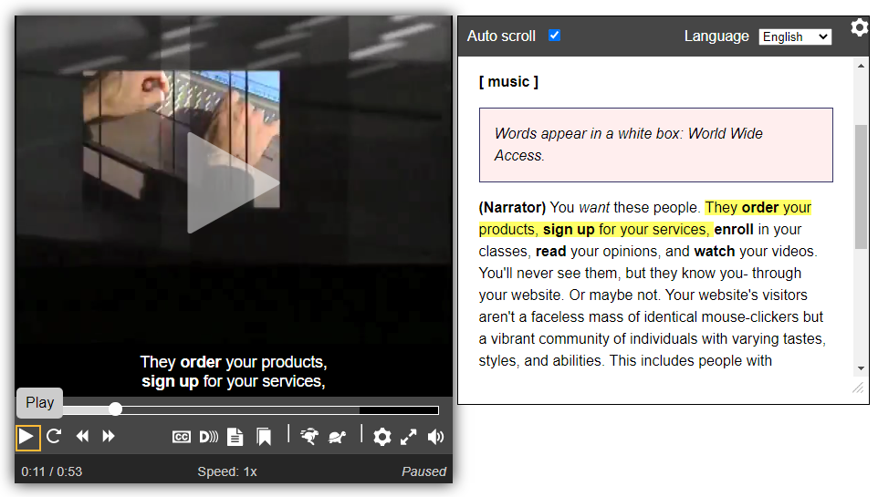

Transcriptions
Aperçu – Transcriptions
Les transcriptions de base sont une version texte de l’information audio parlée et non parlée nécessaire pour comprendre un contenu. Les transcriptions descriptives comprennent également une description textuelle de l’information visuelle nécessaire pour comprendre un contenu. Les transcriptions de base aident les utilisateurs sourds et les utilisateurs qui éprouvent des difficultés à traiter l’information auditive. Les transcriptions descriptives aident les utilisateurs aveugles ou sourds-aveugles et les utilisateurs qui traitent mieux l’information textuelle que l’information audio et visuelle/graphique.
Les transcriptions sont également utilisées par des personnes sans incapacités dans diverses situations:
- Comme solution de rechange à regarder ou à écouter. Pour de nombreux utilisateurs, cela est beaucoup plus facile et plus rapide. Certains utilisateurs voudront prendre connaissance rapidement de la transcription avant de faire jouer le fichier multimédia. D’autres utilisateurs voudront sauvegarder les données sur leur appareil mobile.
- Utilisées hors ligne, imprimées ou converties en braille.
- Pour faciliter la recherche d’un document. Les transcriptions sont indexées par les moteurs de recherche, ce qui rend la page plus facile à trouver.
Avez-vous besoin d’une transcription?
Pour les contenus pré-enregistrés :
- Les contenus vidéo avec de l’audio nécessitent une transcription descriptive.
- Les contenus vidéo seulement nécessitent une transcription descriptive ou une audiodescription.
- Les contenus audios seulement nécessitent une transcription de base.
Pour les diffusions en direct sur le Web :
- Les transcriptions pour le contenu vidéo avec de l’ audio ne s’appliquent pas aux vidéos en direct (sous-titrage en direct requis).
- Les contenus vidéo seulement peuvent comporter une transcription descriptive (facultatif).
- Les contenus audio seulement exigent soit des sous-titres, soit une transcription de base.
Que comprend une transcription?
Pour déterminer ce qu’il faut inclure dans une transcription de base, consultez Transcription de l’audio en texte pour obtenir des conseils sur l’information audio parlée et non parlée. Les transcriptions descriptives exigent également une description de l’information importante; consultez la section Description de l’information visuelle pour obtenir des conseils.
Trouver la transcription
Placez la transcription ou un lien vers celle-ci directement en dessous ou à côté du lecteur multimédia.
Bon exemple - Vidéo avec transcription descriptive sur la même page
Dans cet exemple, la transcription est stockée dans une balise <details> situé sous la vidéo. La balise enfant <summary> est nommé "Transcript". S'il y avait plusieurs transcriptions sur la même page, chacune devrait être nommée "Transcription pour [titre]".
HTML
Début du code
<video>[…]</video>
<details>
<summary>Transcript</summary>
<!-- La transcription va ici. -->
</details>Fin du code
Transcriptions de présentation et de style
Structurez l’information en paragraphes, listes et sections logiques. Si vous commencez par un fichier de sous-titrage, combinez plusieurs lignes en paragraphes.
Si la transcription se trouve sur une autre page, fournissez un lien vers le fichier audio ou vidéo.
Bon exemple : Transcription descriptive tirée des pistes de sous-titrages et de description
Dans cet exemple, les fragments de phrase estampillés dans les pistes de sous-titrages et de description sont combinés en paragraphes sensés pour une transcription descriptive. Une deuxième variante de transcription présente les informations audio et la description visuelle côte à côte dans des colonnes de tableau.
Exemple de fichier de sous-titrage VTT d’information audio
L'exemple commence
WEBVTT
00:00:07.261 --> 00:00:13.040
Certaines incapacités physiques rendent l’utilisation d’une souris difficile ou impossible.
00:00:20.160 --> 00:00:26.280
Pour inclure tout le monde, assurez-vous que votre site Web ou votre application peut être utilisé au moyen d’un clavier seulement.
00:00:27.140 --> 00:00:30.730
Y compris sur les appareils mobiles.
00:00:34.731 --> 00:00:40.880
Une grande variété de technologies d’assistance intègrent des émulateurs de clavier
00:00:41.620 --> 00:00:45.840pour offrir une fonctionnalité équivalente à une souris.
L'exemple finit
Exemple de fichier VTT d’audiodescription d’information visuelle
L'exemple commence
WEBVTT
00:00:02.120 --> 00:00:06.240
<v Audio Descriptions> Accessibilité des sites Web : Conception pour le clavier.
00:00:14.500 --> 00:00:19.510
<v Audio Descriptions> Un homme en fauteuil roulant utilise une baguette buccale pour taper.
00:00:31.518 --> 00:00:34.520
<v Audio Descriptions> Une femme branche son téléphone sur un clavier portable.
00:00:46.521 --> 00:00:49.142
<v Audio Descriptions> Une femme utilise un clavier virtuel.
L'exemple finit
Exemple de transcription descriptive en format texte
L'exemple commence
[Accessibilité du site Web : Conception pour le clavier]
Narratrice : Certaines incapacités physiques rendent l’utilisation d’une souris difficile ou impossible.
[Un homme en fauteuil roulant utilise une baguette buccale pour taper.]
Pour inclure tout le monde, assurez-vous que votre site Web ou votre application peut être utilisé au moyen d’un clavier seulement. Y compris sur les appareils mobiles.
[Une femme branche son téléphone sur un clavier portable.]
Une grande variété de technologies d’assistance intègrent des émulateurs de clavier pour offrir une fonctionnalité équivalente à une souris.
[Une femme utilise un clavier virtuel.]
L'exemple finit
Exemple de transcription descriptive sous forme de tableau
L'exemple commence
|
Audio |
Visuel |
|---|---|
| - |
Accessibilité du site Web : Conception pour le clavier |
|
Certaines incapacités physiques rendent l’utilisation d’une souris difficile ou impossible. |
Un homme en fauteuil roulant utilise une baguette buccale pour taper. |
|
Pour inclure tout le monde, assurez-vous que votre site Web ou votre application peut être utilisé au moyen d’un clavier seulement. Y compris sur les appareils mobiles. |
Une femme branche son téléphone sur un clavier portable. |
|
Une grande variété de technologies d’assistance intègrent des émulateurs de clavier pour offrir une fonctionnalité équivalente à une souris. |
Une femme utilise un clavier virtuel. |
L'exemple finit
Transcriptions interactives
Les transcriptions interactives sont placées à côté du lecteur multimédia. À mesure que les mots sont prononcés, les mots correspondants dans la transcription sont mis en surbrillance. Les utilisateurs peuvent cliquer sur une phrase n’importe où dans la transcription pour se rendre à ce point précis dans la vidéo (ou l’audio). Les transcriptions interactives sont produites à partir de fichiers textes chronométrés spécifiés dans l’élément <track>.
Bon exemple : Transcription interactive
L'application Able Player comporte une fonctionnalité de transcription interactive, élaborée à partir du chapitre, des fichiers de sous-titrage et des fichiers de description WebVTT à mesure que la page est chargée. Les utilisateurs de clavier peuvent choisir d’activer la transcription au clavier, de manière à pouvoir utiliser la touche de tabulation pour progresser dans le contenu un sous-titre à la fois, et appuyer sur la touche Entrée pour faire jouer le contenu au point désiré.
L'exemple commence
L'exemple finit
Source: Able Player Video Demo #5: Video player with interactive transcript, subtitles, and chapters
Ressources WCAG connexes
Ressources WCAG connexes
Critères de succès
- 1.2.1 : Contenu seulement audio ou vidéo (pré-enregistré)
- 1.2.8 : Version de remplacement pour un média temporel (pré-enregistrée)